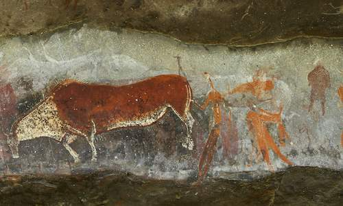
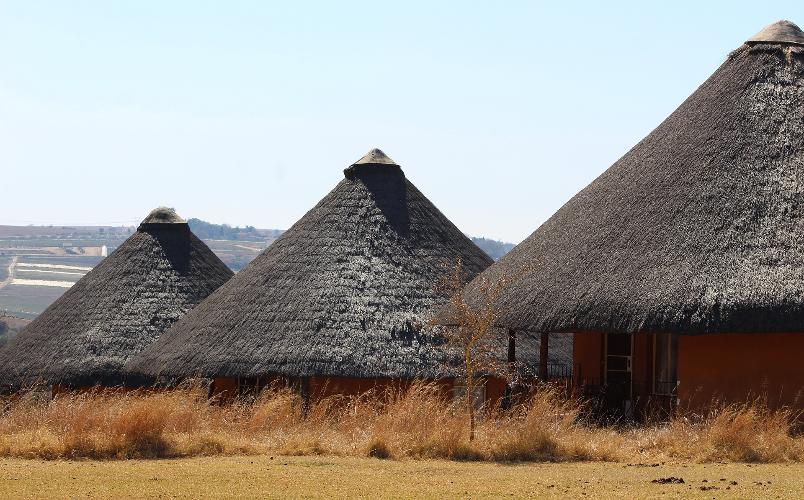
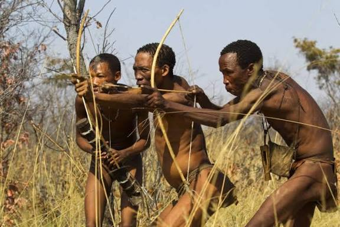

Preserve
Document oral knowledge, historical records and place-based heritage.
About Us
The purpose
uNdoqo documents and interprets Indigenous histories, languages, identities and built heritage, connecting rigorous research with accessible public learning.
Through Sandile Tukani University, we share educational programmes, books, advisory services and public media rooted in this work.


Document oral knowledge, historical records and place-based heritage.

Analyse language, genealogy, social history and sources with care.

Make knowledge accessible through education, media and digital tools.
Images from the project's existing asset library; historical interpretation and attribution should be reviewed before publication.